Депрессивные состояния
Подавленность, потеря интереса, нарушения сна, чувство безнадёжности и снижение энергии.
Анонимная медицинская помощь 24/7
Психиатрия, наркология, психологическое тестирование и психологическая помощь для взрослых и подростков старше 14 лет. Анонимно, комплексно, безопасно — в клинике, на дому и дистанционно.
Бережный маршрут к внутренней устойчивости: от первого разговора до понятного плана помощи.
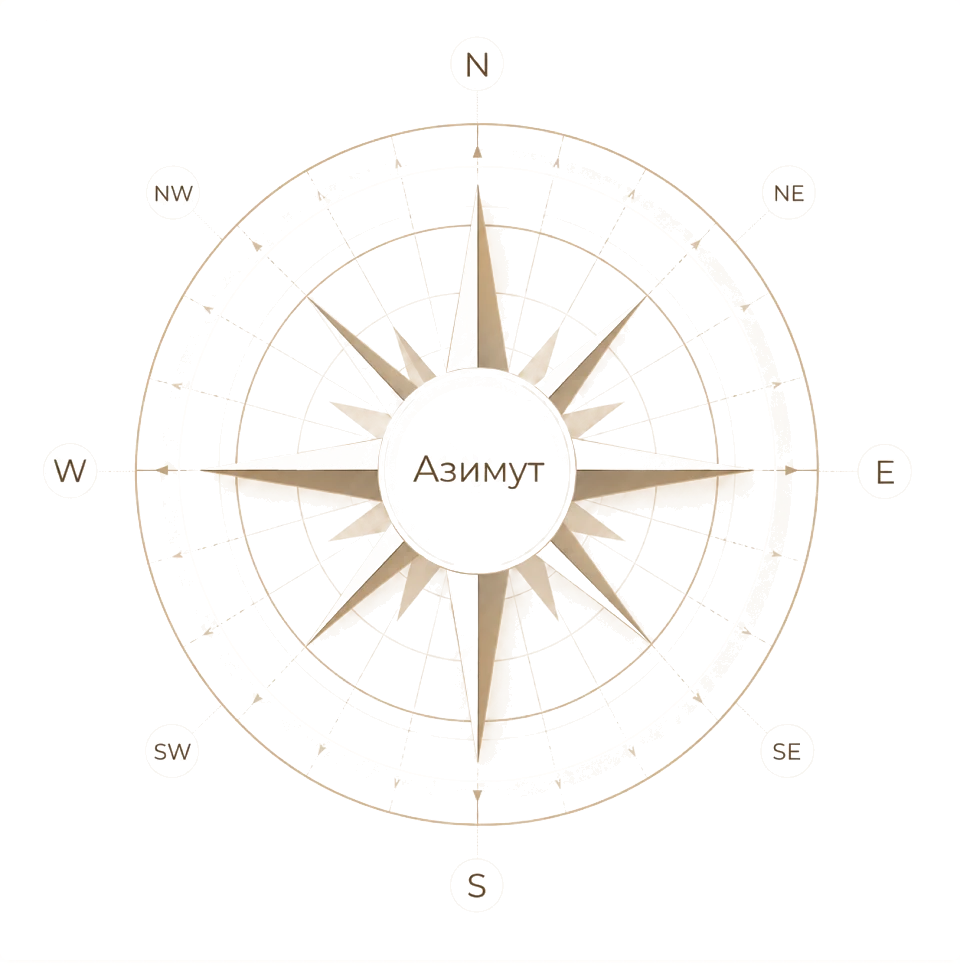
Коснитесь компаса и он мягко подскажет вам путь
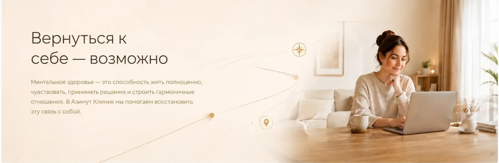


Клиника работает в 5 направлениях
Мы смотрим на ситуацию комплексно: учитываем состояние человека, обстоятельства, риски, запрос семьи и подбираем формат помощи, с которого безопаснее начать.
Консультации и диагностика состояния при тревоге, панических атаках, депрессивных состояниях и кризисах.
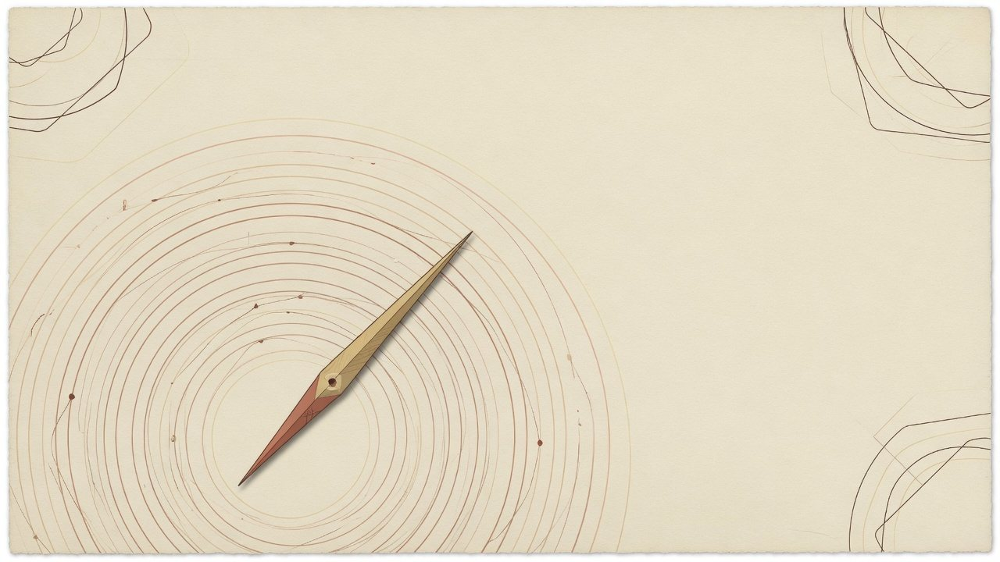
Первичная консультация психиатра — 7 500 ₽
Повторная консультация психиатра — 7 000 ₽
Дистанционная консультация психиатра — 7 000 ₽
Анонимная помощь при зависимостях, запойных состояниях, интоксикации и поддержка родственников.
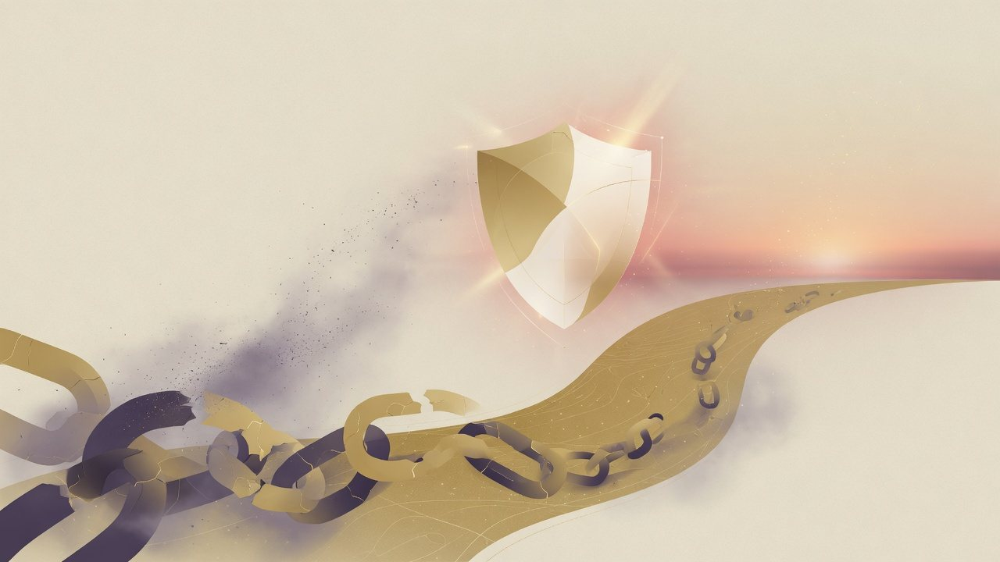
Консультация психиатра-нарколога — 7 500 ₽
Программа детоксикации — 17 500 ₽
Капельница стандарт — от 6 000 ₽
Индивидуальная и семейная психотерапия при эмоциональном напряжении, кризисах и сложностях в отношениях — бережный диалог и понятный маршрут.
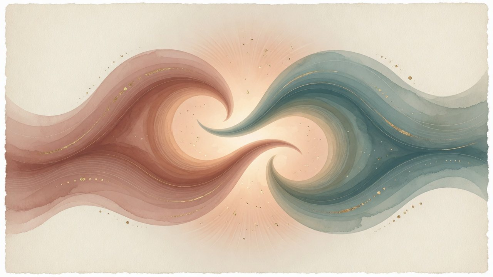
Индивидуальная психотерапия 45 минут — 7 500 ₽
Семейная психотерапия — 10 000 ₽
Онлайн-консультация психотерапевта — 7 500 ₽
Психологическая поддержка при выгорании, семейных кризисах, подростковых трудностях и запросах родственников — конфиденциально и без давления.
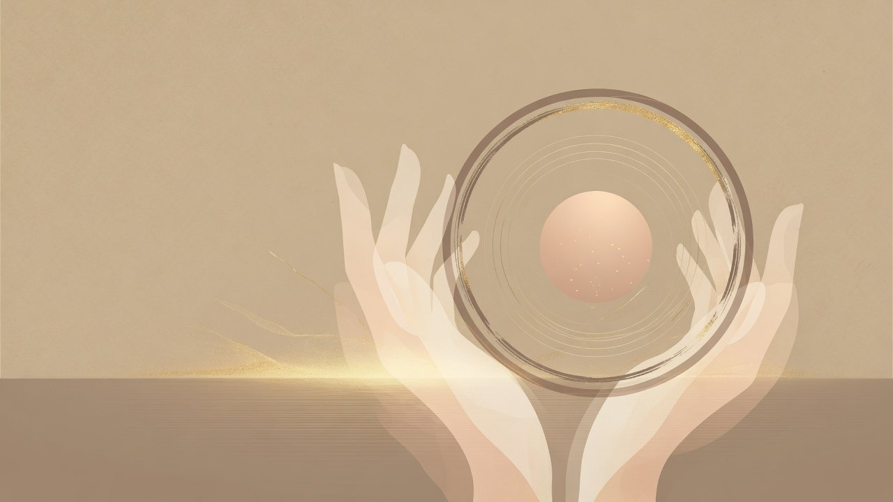
Консультация психолога — по запросу
Консультация родственников — по запросу
Онлайн-помощь — по РФ
Структурированная оценка эмоционального состояния, когнитивных особенностей и рисков — с понятным разбором результатов.
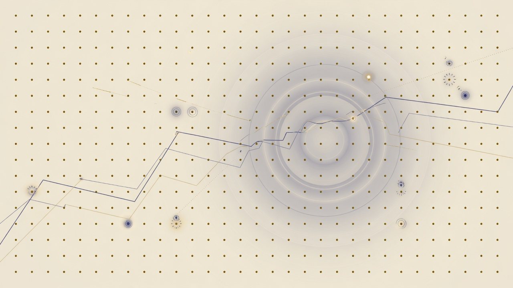
Психологическое тестирование — от 8 000 ₽
Диагностика состояния — по запросу
Онлайн-формат — по согласованию
Цены являются предварительными и уточняются администратором. Итоговая стоимость зависит от состояния пациента, адреса, времени обращения и выбранного формата помощи.
Заболевания и состояния
Раздел собран по логике ведущих медицинских клиник: не как каталог диагнозов для самодиагностики, а как навигация по ситуациям, с которыми можно обратиться за профессиональной оценкой.
Подавленность, потеря интереса, нарушения сна, чувство безнадёжности и снижение энергии.
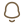
Панические атаки, постоянное напряжение, навязчивое беспокойство и телесные проявления тревоги.
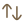
Резкие перепады настроения, периоды подъёма и спада, сложности с режимом и импульсивностью.
Алкогольная, никотиновая и другие формы зависимости, а также поддержка семьи пациента.
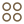
Ограничения в питании, переедание, тревога вокруг веса и образа тела.
Последствия травматичных событий, флешбэки, избегание, раздражительность и нарушения сна.
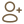
Изменения настроения, тревога, нарушения поведения и адаптации у пожилых пациентов.
Состояния, требующие врачебной диагностики, наблюдения и понятного плана лечения.
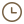
Истощение, раздражительность, снижение продуктивности, трудности восстановления и отдыха.
Наши специалисты
Главный врач с 30-летним стажем, психиатры клинической и научной школы, специалист по психосоматике — команда, с которой можно начать без «угадывания» специалиста.
На первичном контакте администратор уточнит ситуацию, подскажет формат консультации и направит к подходящему врачу без давления.
Смотреть специалистов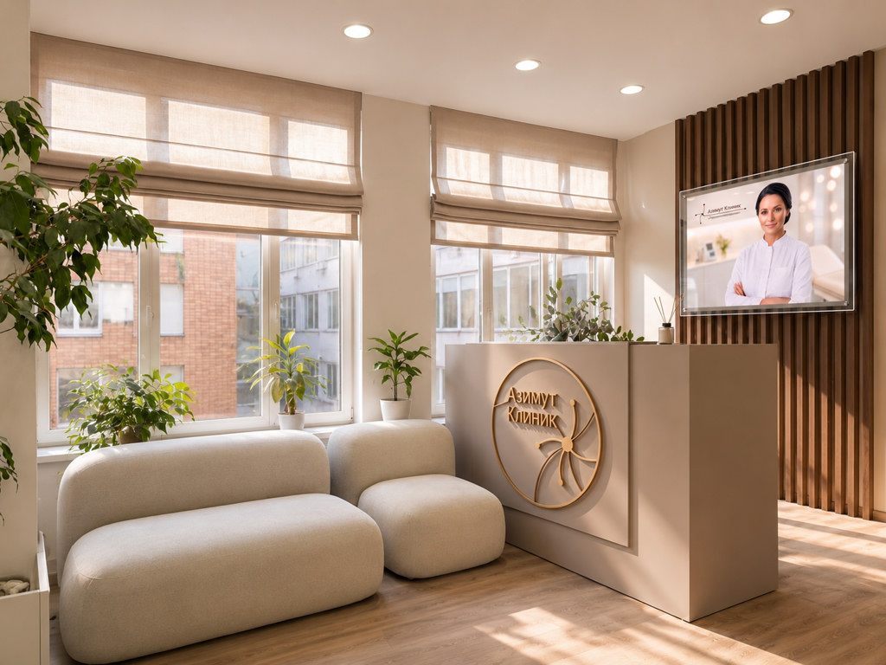
Пространство помощи
Визуальная часть сайта подготовлена для предпрезентации: кабинет, специалисты и карточки создают ощущение современного медицинского центра без давления и перегруза.
Узнать о подходеФорматы помощи
Очная консультация специалиста в спокойной и конфиденциальной обстановке. Подходит для первичной диагностики, психологического тестирования и плановой помощи.
Выезд специалиста на дом по Москве и Московской области, когда пациенту сложно приехать самостоятельно или требуется помощь в привычной обстановке.
Онлайн-консультации по видеосвязи для пациентов из разных регионов РФ. Удобно для повторных встреч, предварительной оценки запроса и сопровождения.
Краткая первичная консультация помогает сориентироваться, какой специалист и формат обращения могут подойти в вашей ситуации.
Вы не одни
Когда состояние кажется запутанным, важно не оставаться с ним один на один. Мы поможем спокойно разобраться в ситуации, подобрать специалиста и определить первый безопасный шаг.
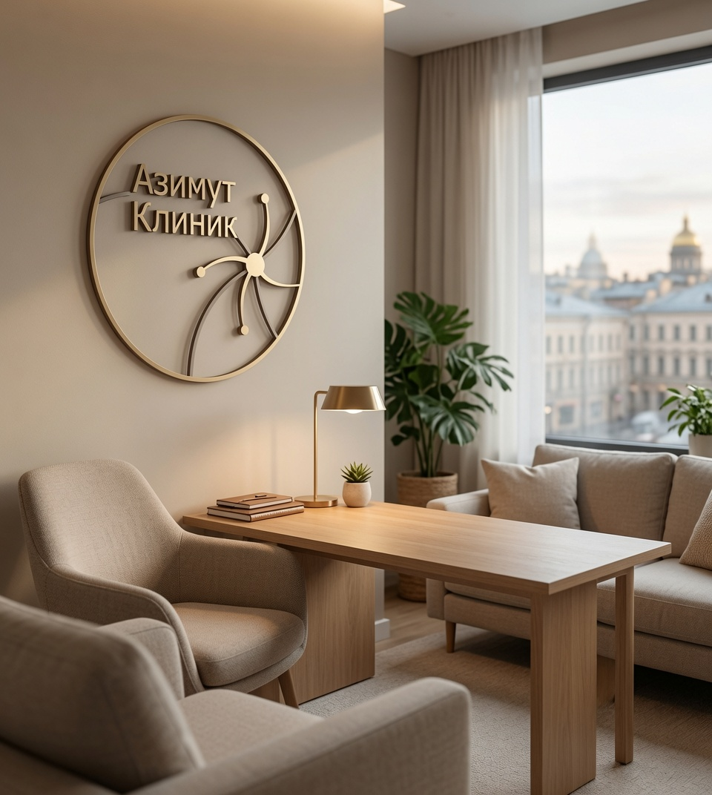
Оформление обращения
Администратор свяжется с вами, уточнит задачу и предложит ближайший понятный шаг: звонок, онлайн-консультацию, визит в клинику или выезд специалиста.